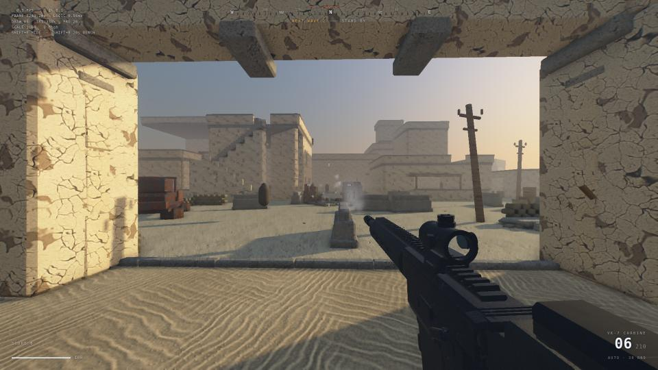
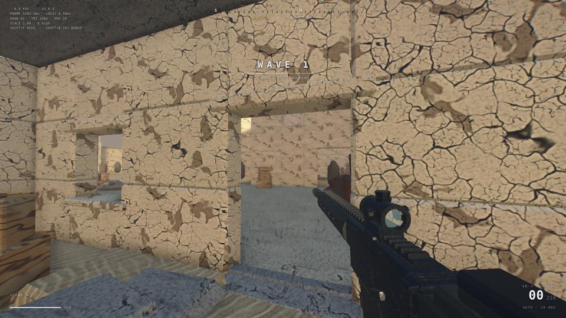
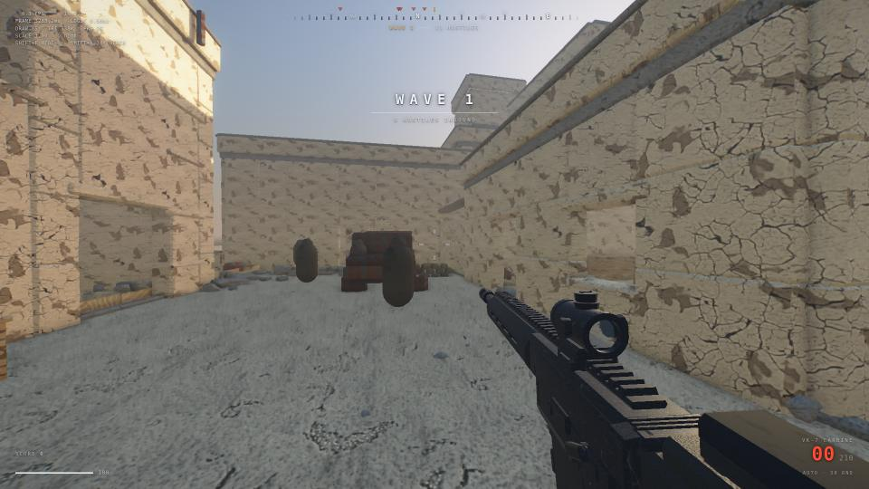
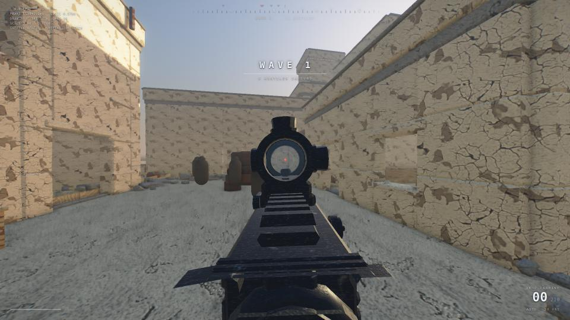
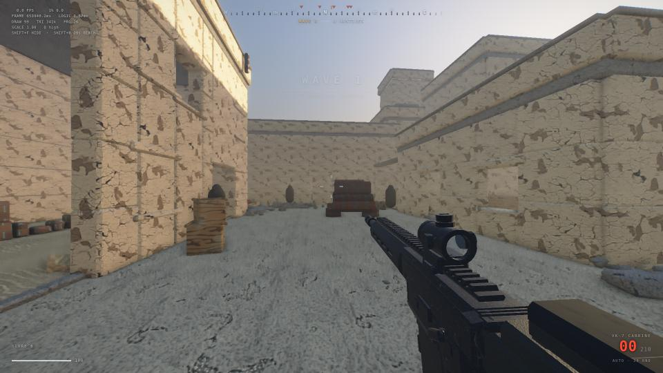
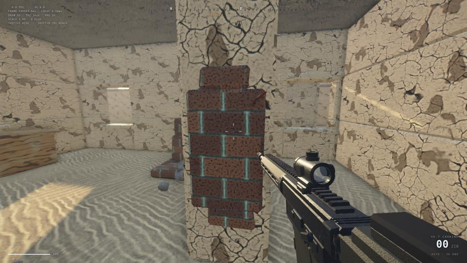
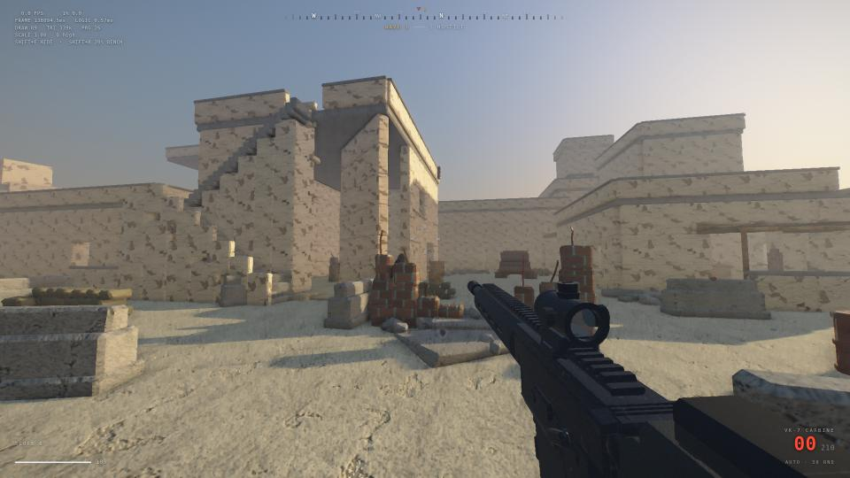

| metric | value | limit | headroom |
|---|---|---|---|
| drawCalls | 97 | 260 | |
| triangles | 341410 | 950000 | |
| fullscreenPasses | 3.199 | 8 | |
| shadowTexelsM | 8.4 | 14 | |
| logicMs | 0.25 | 4 | |
| programs | 26 | 90 |
| gpu | fragment | shadow | vertex | draw cpu | frame | fps |
|---|---|---|---|---|---|---|
| Apple M1 (8c GPU) | 3.21 | 0.68 | 0.21 | 0.68 | 4.1 | 244 |
| GTX 1660 | 1.78 | 0.37 | 0.11 | 0.87 | 2.26 | 443 |
| piece | score | biggest remaining gap |
|---|---|---|
| lighting | 3/10 | Nothing in any frame is grounded — cast shadows are so soft and low-contrast they barely read, small props cast none at all, and there is zero contact darkening or ambient occlusion anywhere, so the sun never reads as an actual light source and every object looks pasted onto the sand. |
| materials | 3/10 | Every substance in the frame — plaster, cast concrete, brick, timber, sand, gunmetal, optic glass — shares one identical roughness/specular response, so nothing is identified by how it reacts to light and the whole world reads as one plastic shell wearing different printed decals. |
| level | 3/10 | Every structure is a texture-wrapped cuboid with razor-sharp arrises and no real apertures — no doors, windows, lintels, reveals or chamfers — so nothing catches an edge highlight, nothing states human scale, and the map reads as a massing blockout with a nice material pass on it. |
| combat | 2/10 | The hostiles are featureless dark capsules — a rounded-top tombstone blob with no head, shoulders, arms, legs or weapon — so nothing on screen reads as a human being and you genuinely cannot distinguish a hostile from a rock. |
| weapon | 3/10 | At ADS the optic is blind — the lens interior is a flat painted grey disc, not a view of the world, so the red crates and sandbag that sit directly downrange simply do not appear through it, and a dark blob of front-sight geometry occludes the bottom third of what little picture there is. |
| gestalt | 3/10 | The entire world - near wall, far building, ground and sky - sits in one narrow cream value band wearing one cracked-mud texture, so the frame has no depth structure, no material variety and no focal point, leaving the weapon as the only high-contrast object and making it look composited in from a different game. |
| hud | 3/10 | The top-left of both frames is raw monospace engine telemetry (FPS / FRAME 3283.2ms / DRAW 85 TRI 338k PRG 26 / SHIFT+F HIDE), and the player-facing health readout uses that same monospace face — so there is no visual boundary at all between debug output and the shipped HUD. |






